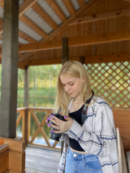
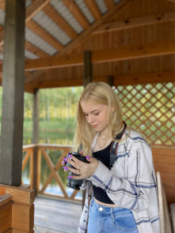

KRAVCHENYA
DIANA
Люблю эту жизнь
О НЕЙ
Она — воплощение жизни и энергии, девушка двадцати лет, которая не боится идти вперёд и всегда готова к приключениям. Её страсть к жизни проявляется в каждой мелочи: от уютного вечера за просмотром любимого сериала с чашкой горячего какао до захватывающего путешествия в лес, где она собирает ароматный мёд диких пчёл.
У неё множество увлечений, и она интересуется всем, что её окружает. Она любит свою семью, друзей и животных, особенно трёх кошек, которые стали неотъемлемой частью её жизни. Ей нравится гармония между городской суетой и тишиной деревенской природы, ведь именно здесь она находит умиротворение и вдохновение.
ВАЖНОЕ
Главная составляющая нашей жизни — это люди, которые нас окружают. Мы ценим их поддержку, любовь и заботу. Я очень люблю своих родных и близких, ценю время, проведённое с ними, и наши совместные воспоминания.

КОННЫЙ СПОРТ
РИСОВАНИЕ
МАНИКЮР
АВТОМОБИЛИ
ГОТОВКА
ПУТЕШЕСТВИЯ И ВРЕМЯ НА ПРИРОДЕ
ФОТОГРАФИЯ
С самого детства любовь к лошадям привил мне дедушка. И теперь лошади и конный спорт стали моей неизлечимой болезнью. Я занималась этим видом спорта на протяжении пяти лет, но переезд в Минск заставил меня сделать паузу. Однако время от времени я посещаю конный клуб во время поездок домой и катаюсь на конных прогулках в Минске. В будущем я планирую возобновить тренировки и, возможно, даже обзавестись собственной лошадью.
С самого детства я люблю рисовать, и это занятие стало важной частью моей жизни. Несмотря на то что из-за учёбы у меня остаётся мало времени для хобби, я стараюсь находить возможность заниматься рисованием. Я училась самостоятельно, так как попытки посещать художественную школу не принесли желаемого результата — мне быстро становилось скучно. Однако благодаря своему упорству и таланту я смогла зарабатывать, продавая свои работы. Сейчас я продолжаю сотрудничать с одной российской компанией, занимающейся дизайном и иллюстрацией. Рисование помогает мне расслабиться, выразить свои мысли и чувства через образы. Это занятие вдохновляет меня и наполняет жизнь красками.
Мне нравится делать маникюр, и я активно этим занимаюсь. Ведь красота ногтей может стать источником вдохновения и радости для многих девушек.
Мой отец работает в сфере техники, поэтому с юных лет я проявляю интерес к автомобилям, грузовикам и тракторам. В настоящее время я учусь на водительские права и задумываюсь о покупке первой машины. Мне нравятся долгие поездки и ночные путешествия под музыку.
После переезда в собственную квартиру кулинария стала для меня своеобразной медитацией. Мне нравится готовить и радовать близких людей своими блюдами.

Путешествия — моя страсть. Я обожаю открывать для себя новые места, наслаждаться захватывающими видами, изучать архитектуру и погружаться в мир природы. Особенно мне нравится ездить на электричках, они имеют свою особенную атмосферу. Я люблю ходить в лес в любое время года и с разными целями. Прогулки по городам также доставляют мне огромное удовольствие. Но и пребывание в деревне кажется мне прекрасным способом отдохнуть от городской суеты и насладиться тишиной и спокойствием.
 

Мне нравится фотографировать других и фотографироваться самой. Ведь фотографии для меня это искусство. Они позволяют передать мое видение мира другим людям, сохранять важные моменты. Люблю фотографировать и на телефон, но особое удовольствие доставляет процесс съемки на мой фотоаппарат.
Inst: @_____dianka